Lock锁是用来控制多个线程访问共享资源的方式，一般来说，一个锁能够防止多个线程同时访问共享资源（但是有些锁可以允许多个线程并发的访问共享资源，比如读写锁）。在Lock接口出现之前，Java程序是靠synchronized关键字实现锁功能的，而Java SE 5之后，并发包中新增了Lock接口（以及相关实现类）用来实现锁功能，它提供了与synchronized关键字类似的同步功能，只是在使用时需要显式地获取和释放锁。虽然它缺少了（通过synchronized块或者方法所提供的）隐式获取释放锁的便捷性，但是却拥有了锁获取与释放的可操作性、可中断的获取锁以及超时获取锁等多种synchronized关键字所不具备的同步特性。
ReentrantLock
ReentrantLock字面上意思就是可重入锁（又称为递归锁），表示该锁能够支持一个线程对资源的重复加锁。定义一个ReentrantLock：
1 | ReentrantLock lock = new ReentrantLock(); |
默认无参构造函数创建的是非公平锁，构造函数重载方法ReentrantLock(boolean fair)支持传入true创建公平锁。公平锁的意思是多线程在获取锁的时候是公平的，也就是等待时间最长的线程最优先获取锁，类似FIFO。
使用ReentrantLock可以实现和synchronized一样的功能：
1 | public class ReentrantLockTest { |
确保在finally里释放锁，否则容易造成死锁。
上面例子同一时刻只能有一个线程可以获得锁lock，别的线程必须等待锁被释放（unlock）才能开始竞争获取锁。程序运行结果如下所示：
needLock方法和下面通过synchronized关键字实现锁方法效果是一样的：
1 | public static void needLockBySync() { |
为什么ReentrantLock又称为递归锁呢？这是因为：一个线程如果获取了某个方法的锁，这个方法内部即使调用了别的需要获取锁的方法，那么这个线程不需要再次等待获取锁，可以直接进去。说着可能有点抽象，下面举个例子：
1 | public class Test { |
程序运行结果：
1 | 0 invoked method1 |
上面例子中，method1和method2都加了锁，线程0获取到了method1的锁后，内部可以直接调用method2，无需重新获取锁对象。synchronized也具有相同的特性。
ReentrantLock可以对一个方法不限次的重复加锁，但解锁次数必须和加锁次数一致，否则锁永远不会被释放，别的线程将无法获取该方法的锁，比如：
1 | public class Test { |
程序运行结果： 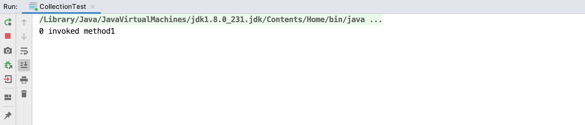 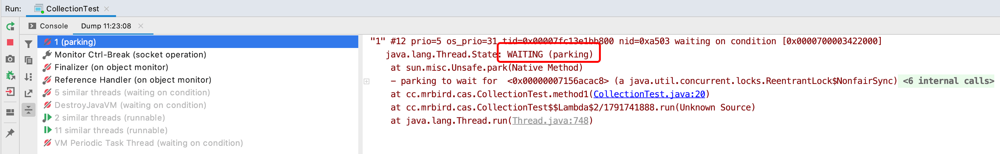
线程1一直处于WAITING状态，因为线程0加锁了4次，但只释放了3次锁，所以线程1一直无法获取到锁。
lock方法是不可被打断的，即调用线程的interrupt方法不起作用：
1 | public class ReentrantLockTest { |
运行结果:
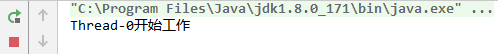
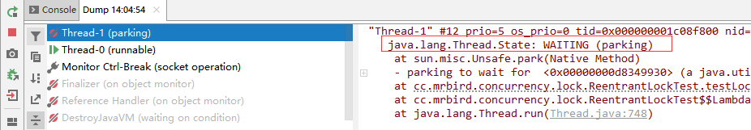
thread2(Thread-1)依旧在继续等待获取锁，没有被打断。
ReentrantLock提供了可打断获取锁的方法lockInterruptibly：
1 | public class ReentrantLockTest { |
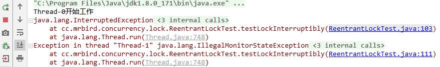
thread2在等待获取锁时被打断，抛出InterruptedException异常。
ReentrantLock的tryLock方法用于尝试获取锁，返回boolean类型，表示获取锁成功与否：
1 | public class ReentrantLockTest { |
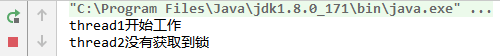
thread1抢到锁后进入死循环，一直不释放锁。thread2尝试获取锁失败后直接放弃。
tryLock的重载方法tryLock(long timeout, TimeUnit unit)可以设置尝试获取锁的时间范围，超过这个时间没有获取到锁则返回false。
ReentrantLock一些别的方法：
| 方法 | 含义 |
|---|---|
getQueueLength() | 等待获取锁线程数量 |
hasQueuedThreads() | 是否有在等待获取锁的线程 |
hasQueuedThread(Thread thread) | 等待获取锁的线程队列里是包含指定的线程 |
isLocked | 当前锁是否被任意一个线程获取到了 |
Spin Lock
JUC中并没有自旋锁对应的类，而所谓的自旋锁就是：尝试获取锁的线程不会马上阻塞，而是采用循环的方式去尝试获取锁。这种方式的好处是可以减少线程上下文切换的消耗，缺点是循环会消耗CPU资源。一个经典的自旋锁例子就是unsafe类里的CAS思想：
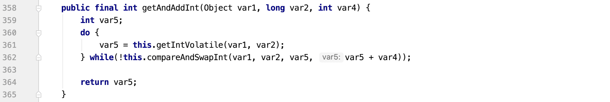
我们可以利用CAS实现一个自旋锁：
1 | public class SpinLock { |
程序输出如下：
1 | 线程1尝试获取锁 |
ReadWriteLock
ReadWriteLock为读写锁。ReentrantLock为排他锁，同一时刻只允许一个线程进行访问，而读写锁在同一时刻可以允许多个读线程访问，但是在写线程访问时，所有的读线程和其他写线程均被阻塞。读写锁维护了一对锁，一个读锁和一个写锁，通过分离读锁和写锁，使得并发性相比一般的排他锁有了很大提升。
简而言之，ReadWriteLock包含读写锁，遵循以下规则：
写的时候不能读
写的时候不能写
读的时候不能写
读的时候可以读
ReadWriteLock为接口，我们使用它的实现类ReentrantReadWriteLock创建读写锁实例：
1 | ReentrantReadWriteLock lock = new ReentrantReadWriteLock(true); |
使用读写锁创建一个读写的例子：
1 | public class ReadWriteLockTest { |
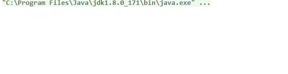
ReentrantReadWriteLock还包含了一些别的实用方法：
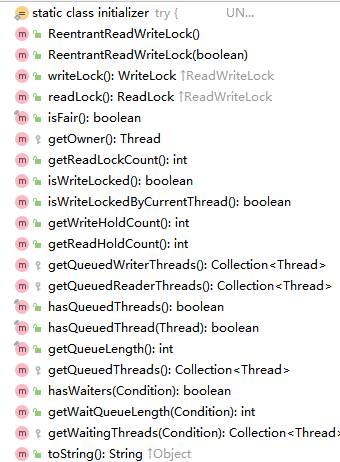
功能和上面介绍的ReentrantLock差不多，方法名见名知其意，不再演示了。
JDK8 StampedLock
JDK8 新增了一个锁StampedLock，它是对ReadWriteLock的改进。
使用ReadWriteLock的时候，当读线程数量远大于写线程数量的时候就会出现“写饥饿”现象。因为锁大概率都被读线程抢走了，写线程很难抢到锁，这将使得读写效率非常低下。
JDK8的StampedLock就是为了解决这个问题而设计的，StampedLock包含乐观锁和悲观锁：
乐观锁：每次去拿数据的时候，并不获取锁对象，而是判断标记位（stamp）是否有被修改，如果有修改就再去读一次。
悲观锁：每次拿数据的时候都去获取锁。
通过乐观锁，当写线程没有写数据的时候，标志位stamp并没有改变，所以即使有再多的读线程在读取数据，它们都可以直接去读数据，而无需获取锁，这就不会使得写线程抢不到锁了。
stamp类似一个时间戳的作用，每次写的时候对其+1来改变被操作对象的stamp值。
下面我们通过一个例子来模拟写饥饿的情况：创建20个线程，其中19个线程用于读数据，1个线程用于写数据：
1 | public class StampedLockTest { |
上面例子通过StampedLock调用writeLock、unlockWrite、readLock和unlockRead的时候都会导致StampedLock的stamp值的变化，即每次+1，直到加到最大值，然后从0重新开始。
上面程序运行结果如下： 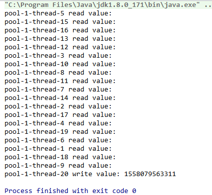
可以看到写线程最后才抢到锁并写入数据。
我们通过乐观锁来改善这个例子：
1 | public class StampedLockTest2 { |
我们重点关注read方法。read方法一开始通过调用StampedLock的tryOptimisticRead方法来获取标志位stamp，获取乐观锁并不会真正的去获取锁（所以不会阻塞写操作），然后直接去读数据。接着通过StampedLock的validate方法判断标志位stamp是否被修改了（write方法里会修改标志位的值），如果方法返回true，则说明数据没有被修改过，直接使用前面读取的数据即可；否则需要去获取锁重新去读数据，阻止写操作。
上面例子运行结果如下：
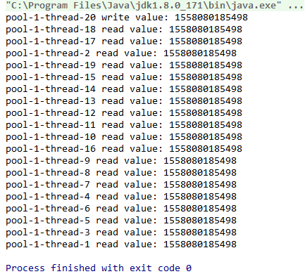
可以看到，写操作一开始就抢到了锁，并写入了数据。
简而言之，StampedLock解决了在没有新数据写入时，由于过多读操作抢夺锁而使得写操作一直获取不到锁无法写入新数据的问题。
Condition
Condition接口提供了类似Object的wait、notify和notifyAll方法，与Lock配合可以实现生产/消费模式，但是这两者在使用方式以及功能特性上还是有差别的。
使用Codition实现一个生产消费的例子：
1 | public class ConditionTest { |
上面例子中，通过consumed判断数据是否被消费。produceData方法在获取锁后，判断数据是否被消费，如果没有被消费，则调用Condition的await方法进入等待，直到Condition对象的signal方法被调用；consumeData方法逻辑和produceData一致。
Condition核心用法就是通过await方法让线程进入阻塞等待状态，通过signal解除阻塞状态。上面的例子运行效果如下所示：
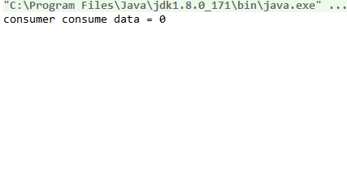
对应上面的例子我们可以思考下面三个问题：
是否可以只使用Lock而不使用Condition？
生产者抢到了锁进入await，并没有释放锁，为什么消费者可以获得锁？
是否可以只使用Condition不使用Lock？
对于第一个问题：是否可以只使用Lock而不使用Condition？
虽然我们可以定义公平的ReentrantLock，但是实际上并不能确保100%公平，只是尽可能的公平。生产消费模型必须为生产者生成完了数据通知消费者消费，消费者消费完了通知生产者生产，这是环环相扣的，不允许出现别的情况。
对于第二个问题：生产者抢到了锁进入await，并没有释放锁，为什么消费者可以获得锁？
假如一开始produceData方法先通过lock.lock()获取到了锁，consumed初始值为false，所以接着方法会调用condition.await()进入阻塞等待。await方法会使得当前线程释放锁对象，然后进入休眠状态，直到发生下面三种情况之一才会被解除休眠：
Condition的
signal方法被调用；Condition的
signalAll方法被调用；其他线程调用了当前线程的
interrupt方法。
对于第三个问题：是否可以只使用Condition不使用Lock？
既然await会使得线程进入阻塞等待状态，那么是否可以直接使用await，而不使用Lock呢？我们改造上面的例子，去掉获取和释放锁的相关代码：
1 | public class ConditionTest { |
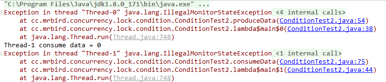
可以看到，程序抛出IllegalMonitorStateException异常，所以Condition必须配合Lock使用。
正如前面说的，Condition的功能类似于Object对象的wait和notify方法，下面我们使用Object对象的wait和notify方法实现一个类似上面生产消费的功能：
1 | public class WaitNotifyExample { |
效果如下所示：
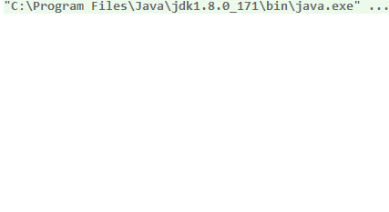
Condition还可以绑定多个条件，并唤醒指定的线程，举个三个线程循环干活的例子：
1 | public class Loop { |
程序输出如下：
1 | 线程A print a |
synchronized和Lock区别
synchronized和Lock都是用于控制多个线程访问共享资源的方式，但他们还是有区别的，主要可以从下面几个方面比较：
1.构成不一样
synchronized是Java关键字，属于JVM层面，底层是由monitorenter和monitorexit指令完成（查看字节码证实）：
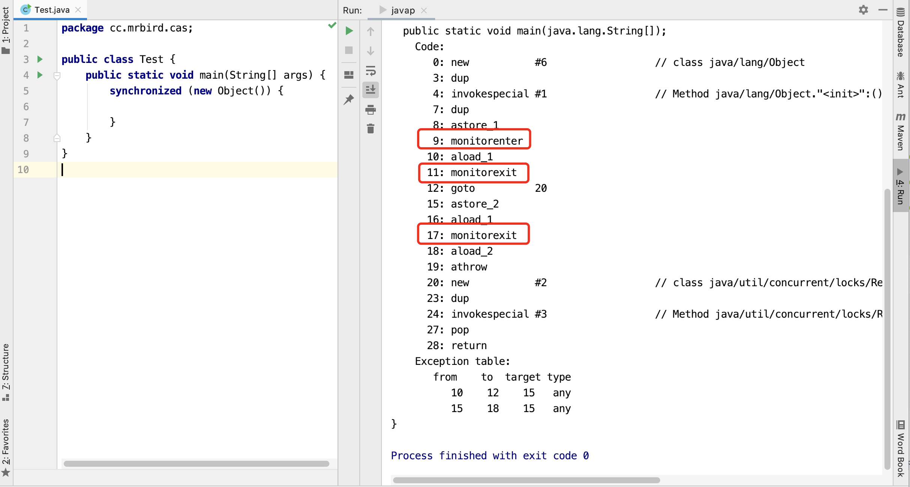
而Lock是JUC下的Java接口类，是API层面的🔐。
2.使用方式不同
synchronized不需要我们手动释放锁，当synchronized代码执行完后，当前线程会自动释放锁；
ReentrantLock需要手动释放锁，不然会造成死锁。
3.可中断性
synchronized是不可中断的，除非同步方法内抛出异常或者程序正常运行完成； ReentrantLock是可以中断的，比如lockInterruptibly()方法。
4.公平否
synchronized是非公平锁；
ReentrantLock可以通过构造方法ReentrantLock(boolean fair)设置公平与否。
5.灵活性
synchronized不可以设置条件；
ReentrantLock可以通过condition绑定多条件，精确唤醒指定线程。